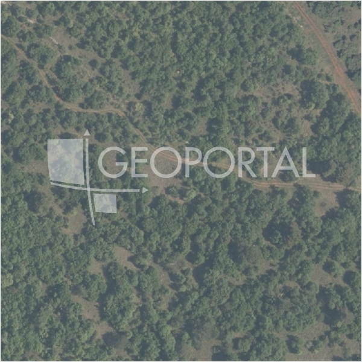

#37027 · TAR!!! Prostrano građevinsko zemljšite sa pristupnim putem
Tar, Tar-Vabriga, Istarska · zemljiste · njuskalo · status active · oglas ↗
Ocjena
- Score
- 56 rule 56 · LLM – · 12.09.2026.
- RLV
- 3,88 M€ (673 €/m²) · ratio 2,99
- Ukupna investicija
- 12,01 M€
- GBP
- 4.154 m²
- Feedback
- –
- CRM
- –
Oglas
- Cijena
- 1.300.000 € (225 €/m²)
- Površina
- 5.770 m² · DKP 1.112.445 m² (odstupanje 9.999,0 %)
- Prodavatelj
- agencija · In fiducia nekretnine d.o.o.
- Prvi put
- 11.09.2026. · zadnje 11.09.2026. · 0 d na tržištu
Povijest cijene
| Datum | Cijena |
|---|---|
| 11.09.2026. | 1.300.000 € |
Flagovi
natura_uz_gradnju Natura/zaštićeno područje uz građevinsku zonu — posebni uvjeti (−5)zop_70_100 ZOP pojas 70/100 m (−10)
area_mismatch DKP površina odstupa > 15 % (−5)
zone_uncertainty zona nije pregledana (reviewed: false) (−5)
parcelacija fazni projekt / parcelacija
zona_iz_oglasa zona preuzeta iz teksta oglasa (bez GIS-a)
llm_pending LLM ekstrakcija/ocjena nedostupna
Komponente score-a
| rlv | {'gbp': 4154.400000000001, 'kis': 0.8, 'nkp': 3115.8, 'noi': None, 'rlv': 3883009.304347827, 'ratio': 2.986930234113713, 'value': None, 'phases': 3, 'profile': 'obala_visestambeno', 'gdv_neto': 17448480.0, 'cost_soft': 830880.0000000001, 'gdv_bruto': 21810600.0, 'kis_known': False, 'total_inv': 12013264.0, 'cost_build': 8308800.000000001, 'cost_other': 1495584.0000000002, 'cost_sales': 654318.0, 'demolition': False, 'gbp_source': 'kis', 'rlv_per_m2': 672.9652173913046, 'parcel_area': 5770.0, 'parcelation': True, 'roi_on_cost': 0.3979682790622099, 'profit_at_ask': 4780898.0, 'cost_demolition': 0.0, 'total_inv_phase': 4923088.0, 'parcel_area_effective': 5193.0, 'sale_price_per_m2_nkp': 7000.0} |
| hard | [] |
| info | ['parcelacija', 'zona_iz_oglasa', 'llm_pending'] |
| rubric | {'permits': {'max': 5.0, 'detail': {'permit': 'none'}, 'points': 0.0}, 'location': {'max': 15.0, 'detail': {'source': 'rlv.yaml:istra_zapad/row1', 'sale_price_per_m2_nkp': 7000.0}, 'points': 15.0}, 'physical': {'max': 4.0, 'detail': {'slope_pct': 3.98, 'slope_points': 2.0, 'sea_row1_bonus': True}, 'points': 3.0}, 'liquidity': {'max': 3.0, 'detail': {'n_cuts': 0, 'points_cut': 0.0, 'points_days': 0.008333333333333333, 'seller_type': 'agencija', 'points_fresh': 0.5, 'price_cut_pct': None, 'days_on_market': 1, 'points_private': 0}, 'points': 0.51}, 'rlv_ratio': {'max': 25.0, 'detail': {'rlv': 3883009, 'ratio': 2.987, 'asking_price': 1300000.0}, 'points': 25.0}, 'ticket_fit': {'max': 10.0, 'detail': {'asking_price': 1300000.0}, 'points': 7.6}, 'zone_quality': {'max': 8.0, 'detail': {'source': 'oglas', 'zone_class': 'stambeno', 'zone_ideal': True}, 'points': 3.0}, 'profit_potential': {'max': 20.0, 'detail': {'roi_on_cost': 0.398, 'profit_at_ask': 4780898}, 'points': 20.0}, 'price_vs_benchmark': {'max': 10.0, 'detail': {'source': 'auto:Tar-Vabriga', 'deviation': 0.1, 'ask_eur_m2': 225, 'benchmark_eur_m2': 250.25}, 'points': 6.5}} |
| weights | {'llm': 0.4, 'rule': 0.6, 'model': 0.0} |
| penalties | {'zop_70_100': 10, 'area_mismatch': 5, 'zone_uncertainty': 5, 'natura_uz_gradnju': 5} |
| raw_score | 80,6 |
| rlv_notes | ['DKP površina odstupa 9999 % → koristi se oglašena', 'parcelacija: > 2500 m² → fazni projekt, −10 % površine, +5 % soft', 'fazni projekt: 3 faze; investicija prve faze 4,923,088 €'] |
| flag_notes | {'natura': True, 'phases': 3, 'max_gbp': 4154, 'zop_band': '70', 'total_inv': 12013264, 'zone_code': 'S', 'zone_class': 'stambeno', 'zone_known': True, 'zone_source': 'oglas', 'zone_reviewed': None, 'protected_area': False, 'total_inv_phase': 4923088, 'area_mismatch_pct': 9999.0} |
| caps_applied | [] |
GIS
- Čestica
- k.o. 323772, k.č. 188/1 (pin_buffer, 0,40)
- Zona
- S (–)
- kig / kis / katnost
- – / – / –
- GP / UPU
- – · UPU –
- Pristup / nagib
- unknown · 4,0 % (max 6,1 %)
- More
- 9 m · red 1 · ZOP 70
- Zaštite
- Natura da · zaštićeno ne · kulturno dobro ne
- Zgrade na čestici
- 0 %
- Match
- 0,40
Karta
Ortofoto (DOF)

RLV kalkulacija — pretpostavke
| gbp | {'value': 4154.400000000001, 'source': 'kis'} |
| kis | {'value': 0.8, 'source': 'default_profila'} |
| sea_row | {'value': '1', 'source': 'gis'} |
| soft_pct | {'value': 0.1, 'source': 'profil+parcelacija'} |
| nkp_ratio | {'value': 0.75, 'source': 'profil'} |
| cost_other | {'value': 1495584.0000000002, 'source': 'profil: doprinosi+uređenje po m² GBP, financiranje+rezerva % gradnje'} |
| parcel_area | {'value': 5770.0, 'source': 'oglas'} |
| asking_price | {'value': 1300000.0, 'source': 'oglas'} |
| margin_on_cost | {'value': 0.15, 'source': 'profil'} |
| build_cost_per_m2_gbp | {'value': 2000.0, 'source': 'profil'} |
| sale_price_per_m2_nkp | {'value': 7000.0, 'source': 'rlv.yaml:istra_zapad/row1'} |
| transfer_tax_and_acquisition | {'value': 0.06, 'source': 'profil'} |
Ekstrakcija iz oglasa
| zone_claim | S |
| access_road | yes |
Benchmarks mikrolokacije
| Vrsta | Vrijednost | n | Od | Izvor |
|---|---|---|---|---|
| land_ask_eur_m2 | 250 | 29 | 11.09.2026. | auto |
| newbuild_sale_eur_m2_nkp | 4.262 | 7 | 11.09.2026. | auto |
Opis oglasa
Prodaje se građevinsko zemljište od 5771 m2 u Taru na vrlo interesantnoj lokaciji, unutar neizgrađenog, ali uređenog građevinskog područja naselja Tar. Trenutno se čestica nalazi na području zone I- gospodarska namjena, proizvodna, pretežito zanatska, no vlasnik je podnio zahtjev za izmjenom u višestambenu namjenu, odnosno za gradnju stanova ili kuća u nizu. Kroz nekoliko mjeseci bi se trebano donijeti novi urbanistički plan sa tim izmijenama. Zainteresirane kupce pozivamo na razgled i sastanak kod načelnika za mogućnosti gradnje na predmetnoj parceli. Duž cijele dužine se proteže asfalitirana cesta, i uz dužinu cijele širine parcele šljunčani dio, te zbog toga zemlijšte ima mogućnosti cijepanja na više manjih parcela kojima je omogućen pristup. Infrastrukutura je u neposrednoj blizini. Lokacija je vrlo interesantna. Napomena: vlasnik nije zainteresiran za kompenzacije!